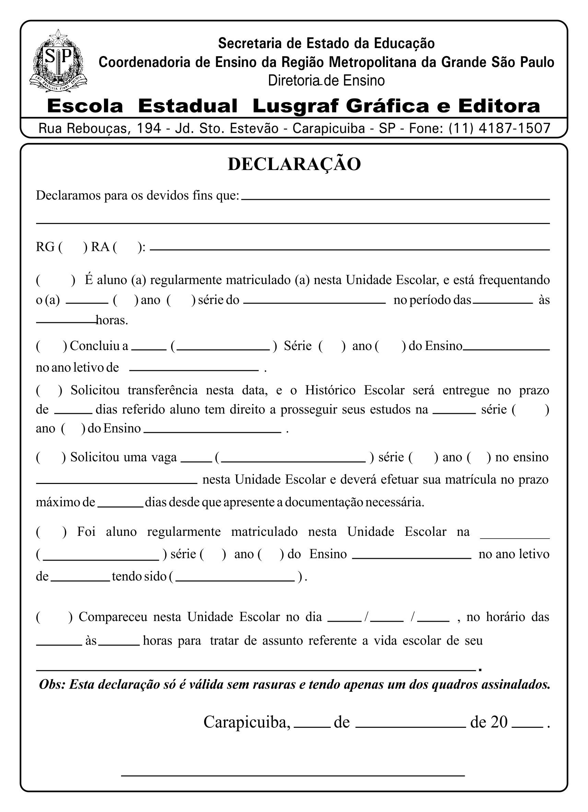
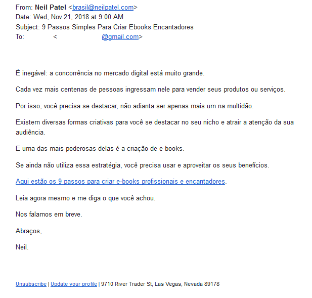
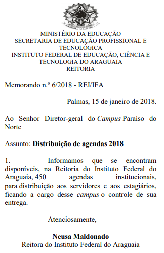
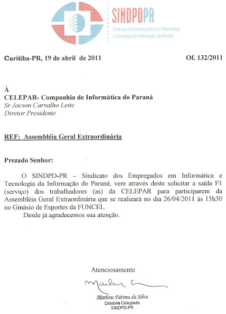
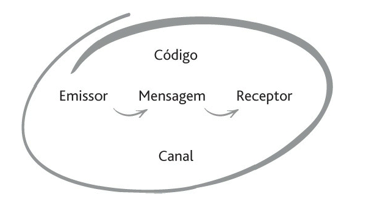
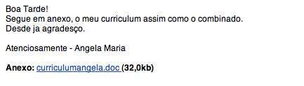
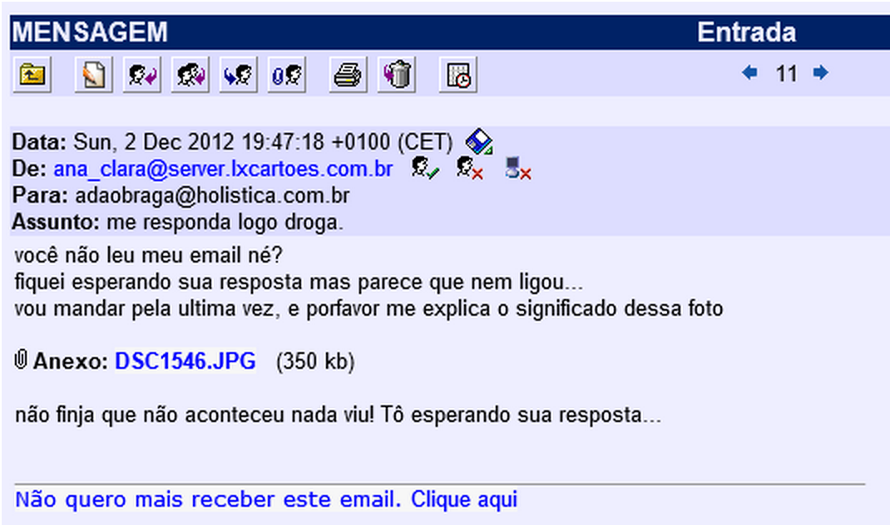

Bem vindx à mais uma aula do curso de Auxiliar Administrativo!
Nesta reta final do nosso primeiro módulo, iremos estudar os principais tipos de documentos empresariais e as técnicas utilizadas para escrevê-los.
Sugiro, para estudos complementares deste curso o material descrito nas referências bibliográficas, em especial:
Manual de redação da Presidência da República
LOPES & PORRUA. Comunicação Empresarial
Allons-y!*
Sumário da Aula
- Documentos Empresariais
- Dicas de Redação Empresarial
- Comunicação e Improvisação Teatral
- Resumo
- Exercícios
- Referências Bibliográficas
Documentos Empresariais
Redação empresarial é uma modalidade de comunicação entre pessoas por meio documentos e atos normativos escritos.
No dia a dia de uma empresa, diversas decisões e ações são tomadas. Estas decisões podem impactar todo o funcionamento de uma empresa ou setor, e por isso devem ser devidamente comunicados a todos os interessados.
Outro exemplo clássico de comunicação empresarial se dá diretamente com seus clientes ou fornecedores. Uma boa relação entre a empresa e seu ambiente externo é possibilitada em grande parte pela comunicação, feita por meio das propagandas, divulgações e atendimentos ao público.
Assim sendo, quando se redige um documento empresarial, o mesmo pode ter 2 destinos diferentes: interno (quando o documento será utilizado internamente pela empresa, sem deixar suas instalações) ou externo (quando o documento é enviado para clientes, fornecedores ou a ambientes fora das instalações da empresa).
Existem diversos modelos diferentes de documentos empresariais, cada qual com suas particularidades e regras de escrita. Suas particularidades serão analisadas individualmente.
| DOCUMENTO | ORIGEM | DESTINO | OBJETIVOS |
|---|---|---|---|
| Ata | Empresa | Interno | Registrar o que aconteceu em uma reunião |
| Carta Comercial | Empresa | Cliente, fornecedor ou patrocinador | Divulgar a empresa para atrair e manter clientes ou parceiros |
| Declaração | Empresa | Empresa | Atestar a veracidade de uma informação sobre uma pessoa física |
| Pessoa Física ou Empresa | Interno ou Externo | Enviar documentos ou encaminhar informações | |
| Memorando | Empresa | Interno | Comunicação interna da empresa |
| Ofício | Empresa | Externo | Comunicação externa da empresa |
| Procuração | Pessoas Físicas | Interno ou Externo | Transferir poderes a terceiros |
| Recibo | Empresa | Pessoa Física ou empresa | Registrar o recebimento de produtos/serviços e o seu pagamento |
| Requerimento | Pessoa Física ou Empresa | Autoridades Públicas | Realizar solicitações ou pedidos aos órgãos públicos |
Destes documentos, daremos ênfase a 6.
Ata
Atas são documentos redigidos em reuniões para se registrar aquilo que foi pautado e falado durante os encontros.
Em toda reunião empresarial deve-se escolher um secretário que se encarregará por escrever as atas. Este secretário pode ser escolhido ao acaso, nas reuniões, ou ser um funcionário da empresa especializado neste tipo de tarefa, como recepcionistas, secretários e auxiliares.
A principal caracterísitica de uma ata é que as mesmas possuem somente 1 parágrafo no qual são apresentados todos os detalhes da reunião.
Ao final da reunião, a ata é lida e então assinada por todos os presentes na mesma.

Carta Comercial
Cartas Comerciais são documentos utilizados para as empresas iniciarem, manterem ou encerrarem transações comerciais.
Isto significa que elas são utilizadas para entrar em contato com clientes, fornecedores ou parceiros comerciais buscando promover os produtos ou serviços da empresa.
Geralmente Cartas Comerciais são enviadas em grande quantidade, utilizando malas diretas, como aquelas enviadas para os eleitores em períodos de eleição.
Exemplos de uso: catálogo para clientes; propostas de parceria comercial

Declaração
Declarações são emitidas sempre que for necessário assegurar a veracidade de um fato.
Exemplos de uso: um funcionário precisa provar a sua empresa que está realizando um curso, para isto solicita a sua escola uma declaração.

E-mails
E-mails são mensagens eletrônicas utilizadas para as mais diversas situações. Seu principal uso comercial é de enviar documentos ou encaminhar informações.
Muitas empresas utilizam-o para envio em massa de mensagens comercias, como newsletter, flyers e ofertas. No entanto, devido a facilidade de se programar o envio de mensagens automatizadas, muitos dos golpes digitais sofridos por empresas tem origem nos emails e spam!

Memorandos
Memorandos são utilizados para a comunicação interna das empresas para informar, solicitar ou encaminhar informações, produtos, verbas, etc.
Exemplos de uso: o Dpto. de Vendas de uma empresa precisa de verba para a compra de novos equipamentos, por isso manda um memorando para o Depto. Financeiro; um grupo de funcionários precisa agendar o uso de uma sala de reuniões, para isso deve informar a todos que a a sala estará sendo usada naquele período

Ofícios
Ofícios são utilizados para a comunicação externa entre empresas. Funcionam como memorandos externos.
Exemplos de uso: uma empresa irá realizar o lançamento de um novo produto, e para isto manda um ofício aos seus patrocinadores para avisar sobre o evento; uma empresa solicita o uso do auditório de uma de suas parceiras para a realização de um evento;

Procuração
Procurações são utilizados quando se precisa transferir a terceiros poderes ou responsabilidades para praticar atos em seu nome. Este documento necessita obrigatoriamente de assinaturas reconhecidas em cartório.
RECONHECIMENTO DE FIRMA é o nome dado ao processo no qual um cartório ou escrevente reconhece a assinatura de uma pessoa. Isto serve para certificar que uma assinatura realmente pertence a uma determinada pessoa
Exemplos de uso: por motivos de doença um sócio de uma empresa irá transferir aos seus filhos suas responsabilidades;

Requerimentos
Requerimentos são documentos endereçados exclusivamente para autoridades públicas. Seu principal objetivo é realizar uma solicitação ou pedido à mesma.
Tanto pessoas físicas quanto jurídicas podem escrever requerimentos.
Exemplos de uso: utilização de espaços públicos para eventos de empresas; solicitação de obras públicas; solicitação para registro em Conselhos Públicos;

Dicas de Redação Empresarial
Conforme o Manual de redação da Presidência da República, as redações empresariais devem caracterizar-se por:
- clareza e precisão;
- objetividade;
- concisão;
- coesão e coerência;
- impessoalidade;
- formalidade e padronização; e
- uso da norma padrão da língua portuguesa.
Um importante elemento utilizado nas redações empresariais são os Pronomes de Tratamento.

(Tabela retirada do livro de LOPES & PORRUA. Comunicação Empresarial).
Na redação oficial, é necessário atenção para o uso dos pronomes de tratamento em três momentos distintos:
1) Endereçamento: é o texto utilizado no envelope que contém a correspondência oficial;
2) *Vocativo: * No vocativo, o autor dirige-se ao destinatário no início do documento, de forma completa (por extenso);
3) No corpo do texto: pode-se empregar os pronomes de tratamento em sua forma abreviada ou por extenso.
Comunicação e Improvisação Teatral
A comunicação desempenha um papel fundamental em qualquer atividade humana. Por trás de toda forma comunicação há uma série de 5 elementos importantes, a citar:
1) Emissor: se refere à pessoa ou grupo que está transmitindo um informação;
2) Receptor: se refere à pessoa ou grupo que recebe as informações;
3) Mensagem: se refere ao conteúdo transmitido do emissor ao receptor;
4) Canal: corresponde ao local onde a mensagem é transimitida, como livros, jornais, TV, o ar (no caso de uma conversa = voz), rádio…
5) Código: representa o conjunto de signos utilizados na mensagem (“idioma”).

No contexto da comunicação, existem duas palavras bastante utilizadas e confundidas: ouvir e escutar.
Várias línguas fazem distinção entre a capacidade de ouvir (hearing, entendre), ou seja, a habilidade sensorial de identificar variações nos sons, e a arte de escutar (listening, écouter), ou seja, tramitar e conectar sentidos e conceitos.
“Portanto, a diferença entre ouvir e escutar é o que acontece após o indivíduo receber o som. Ele está ouvindo quando há pouca interação, e escutando quando está prestando atenção ao que é emitido.”
Para entender, na prática, a diferença entre escutar e ouvir, faremos alguns exercícios de improvisação teatral, baseado nas obras de Viola Spolin, e nos exercícios do Teatro do Oprimido de Augusto Boal.
Nos exercícios de improvisação há uma série bem definida de etapas que acompanham o desenvolvimento dos jogos e das cenas, e para o andamento deste processo é necessário, acima de tudo, exercitar a escuta.
ETAPAS DA IMPROVISAÇÃO
MOTOR –> ESCUTA –> REBOTE –> AÇÃO –> MOTOR –> …
O motor é a mola propulsora da improvisação, consistindo no primeiro impulso (espaço, estado de ânimo, ação, texto…) que norteará a cena.
A escuta é o processo percepção e atenção ao que acontece no espaço; consiste na compreensão daquilo que está acontecendo ou sendo proposto.
O rebote é o processo de resposta ao estímulo ou impulso presente no motor. Nele ocorre a aceitação da proposta e a construção de livres associações despertadas pela mesma no improvisador, levando a uma ação conseguinte.
O processo de aceitação presente no rebote pode se construir como uma negação/bloqueio ao estímulo inicial. Estas situações podem ocorrer de diversas formas, como:
a) Falta de Escuta: ignorar informações relevantes transmitidas durante a cena;
b) Rudeza: não aceitação da proposta, impedindo o prosseguimento da cena;
c) Obstrução maior: interromper um jogador/ator durante a exposição de uma ideia ou ação que daria continuidade à cena;
d) Acessório Ilegal: utilização de objetos concretos durante a cena, quando somente permitidos apenas imaginários;
e) Clichê: uso de expressões ou personagens cômicos ou estereotipados, presentes no senso comum ou no contexto de desenvolvimento da cena.
Exercício 01 – Caminhada no Espaço
Objetivos: auxiliar no processo de autoconhecimento, fazendo-se perceber as próprias habilidades e dificuldades; desenvolver a sensibilidade e a abertura a novas sensações, ideias e visões;
1ª Etapa: caminhar livremente pelo espaço disponível, deixando-o uniformemente preenchido.
2ª Etapa: manter contato visual com a pessoa mais próxima.
3ª Etapa: espelhar as ações do colega.
4ª Etapa: contar uma história com o máximo número de palavras.
5ª Etapa: caminhar pelo espaço, mantendo contato visual com seu colega.
Exercício 02 – Estender a visão e a escuta
Objetivos: auxiliar no processo de autoconhecimento, fazendo-se perceber as próprias habilidades e dificuldades; desenvolver a sensibilidade e a abertura a novas sensações, ideias e visões; auxiliar no processo de sensibilização da escuta e abertura ao outro; desenvolver habilidades interpessoais e de trabalho em equipe;
1ª Etapa: caminhar pelo espaço até que alguém pare. Quando 1 pessoa parar, todas devem parar (processo de ESCUTA).
2ª Etapa: incluir outros comandos de ação ao exercício 01 – parar, mover, pular, etc.
Exercício 03 – Estender a visão e a escuta – com líder
Objetivos: auxiliar no processo de sensibilização da escuta e abertura ao outro; desenvolver a sensibilidade e a abertura a novas sensações, ideias e visões;
1ª Etapa: com todos parados, em pé, um líder indicará uma ação para ser realizada por todo o grupo (REBOTE COM ACEITAÇÃO).
2ª Etapa: um líder irá realizar uma ação. Os demais deverão espelhar as ações do líder, mantendo sua essência, mas podendo modifica-las à sua vontade (REBOTE)
3ª Etapa: com todos parados, em pé, um líder indicará uma ação para ser realizada por todo o grupo. Cada um poderá realizar qualquer ação que não seja aquela indicada pelo líder (processo de REBOTE COM NEGAÇÃO - BLOQUEIO).
Exercício 04 – Contato Visual e Aceitação
Objetivos: auxiliar no processo de sensibilização da escuta e abertura ao outro; desenvolver a sensibilidade e a abertura a novas sensações, ideias e visões;
1ª Etapa: com todos em pé, em uma roda posiciona-se um objeto qualquer no centro da mesma. Uma pessoa por vez deverá ir até o centro da roda e desempenhar alguma ação com o objeto, fingindo que o mesmo é alguma outra coisa. (Homenagem a Magritte).
2ª Etapa: Uma pessoa por vez deverá ir até o centro da roda e desempenhar alguma ação com o objeto central, fingindo que o mesmo é alguma outra coisa, indicado por outro colega/grupo.
3ª Etapa: com todos em roda, uma pessoa iniciará o contato visual com outra, que poderá confirmar ou negar a conexão. Sendo esta confirmada, o ator inicial se moverá até a posição do “match”, que deverá realizar outro contato visual e se mover (REBOTE).
3ª Etapa: caminhada no espaço. Ao comando de AÇÃO os alunos devem cumprimentar a pessoa mais próxima com uma saudação inusitada. Progressivamente o número de pessoas participando da saudação deve aumentar, tornando-se um abraço coletivo.
Nos exercícios de improvisação há uma série bem definida de etapas que acompanham o desenvolvimento dos jogos e das cenas, e para o andamento deste processo é necessário, acima de tudo, exercitar a escuta.
Resumo
- Existem diversos modelos diferentes de documentos empresariais, cada qual com suas particularidades e regras de escrita.
| DOCUMENTO | ORIGEM | DESTINO | OBJETIVOS |
|---|---|---|---|
| Ata | Empresa | Interno | Registrar o que aconteceu em uma reunião |
| Carta Comercial | Empresa | Cliente, fornecedor ou patrocinador | Divulgar a empresa para atrair e manter clientes ou parceiros |
| Declaração | Empresa | Empresa | Atestar a veracidade de uma informação sobre uma pessoa física |
| Pessoa Física ou Empresa | Interno ou Externo | Enviar documentos ou encaminhar informações | |
| Memorando | Empresa | Interno | Comunicação interna da empresa |
| Ofício | Empresa | Externo | Comunicação externa da empresa |
| Procuração | Pessoas Físicas | Interno ou Externo | Transferir poderes a terceiros |
| Recibo | Empresa | Pessoa Física ou empresa | Registrar o recebimento de produtos/serviços e o seu pagamento |
| Requerimento | Pessoa Física ou Empresa | Autoridades Públicas | Realizar solicitações ou pedidos aos órgãos públicos |
A comunicação ocorre por meio da interação de um emissor que transmite uma mensagem cifrada em determinada código, utilizando-se determinado canal, para um receptor.
Várias línguas fazem distinção entre a capacidade de ouvir (hearing, entendre), ou seja, a habilidade sensorial de identificar variações nos sons, e a arte de escutar (listening, écouter), ou seja, tramitar e conectar sentidos e conceitos.
No contexto da improvisação, a escuta ocorre por meio da percepção e do rebote do que acontece no espaço.
Exercícios
01) Identifique os tipos de documento mostrado a seguir:


- 


02) Que erro foi cometido na redação do documento abaixo?

03) Indique os cuidados que devem ser tomados na recepção e envio do tipo de documento mostrado abaixo:
- 
04) Assista ao vídeo abaixo e responda: quais as diferenças entre escutar e ouvir?
Referências Bibliográficas
BOAL, Augusto. Jogos para atores e não-atores. Rio de Janeiro: Civilização Brasileira, 1998.
BOAL, Augusto. 200 exercícios e jogos para o ator e o não-ator com vontade de dizer algo através do teatro. Rio de Janeiro: Civilização Brasileira, 5ed., 1983.
BRASIL. Presidência da República. Casa Civil. Manual de redação da Presidência da República. BRASÍLIA, DF: Casa Civil, Subchefia de Assuntos Jurídicos ; coordenação de Gilmar Ferreira Mendes, Nestor José Forster Júnior [et al.]. – 3. ed., rev., atual. e ampl. – Brasília: Presidência da República, 2018. 189 p. Disponível em https://bit.ly/3fGZWRM. Acesso em 14 de mai. de 2020.
CARVALHO, José Luis Felício; FARIA, Marina Dias de. O teatro de improviso como proposta pedagógica na formação em ciências sociais aplicadas. Revista Interdisciplinar de Gestão Social, 3 (3), pp.79-104.
DUNKER, Christian; THEBAS, Cláudio. O Palhaço e o Psicanalista: como escutar os outros pode transformar vidas. São Paulo: Planeta do Brasil, 2019
FERREIRA, Brenno Jadvas Soares. Fluxo espontâneo e capacidade de jogo: Estudos atorais a partir de princípios do Teatro-Esporte e do Match de Improvisação. Dissertação de Mestrado. Instituto de Artes- IARTE. Universidade Federal de Uberlândia. Uberlândia, 2015.
LOPES, G. V. C. P. F.; PORRUA, R. P. D. Comunicação Empresarial. Curitiba: Instituto Federal do Paraná, 2012. Disponível em https://bit.ly/2zEFHDG. Acesso em 14 de mai. de 2020.
SPOLIN, Viola. Jogos Teatrais: o fichário de Viola Spolin; tradução de Ingrid Dormien Koudela. São Paulo: Perspectiva, 2012.
SPOLIN, Viola. Jogos Teatrais na sala de aula: um manual para o professor. Tradução de Ingrid Dormien Koudela e Eduardo José de Almeida Amos. São Paulo: Perspectiva, 2012.
SPOLIN, Viola. Improvisação para o teatro. Tradução de Ingrid Dormien Koudela e Eduardo José de Almeida Amos. São Paulo: Perspectiva, 2010.